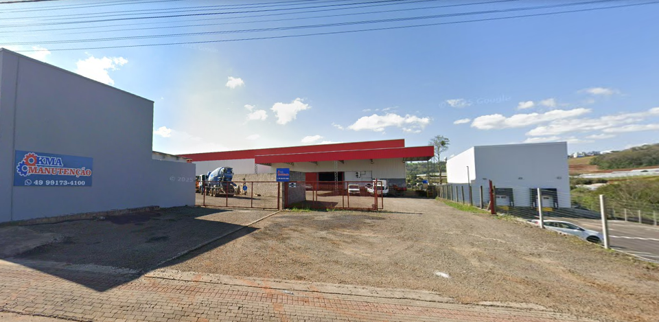

Nossa História e Valores

Desde a sua fundação, a KMA se destaca pela dedicação ao cliente, rapidez na execução dos serviços e uso de soluções modernas e seguras. Nosso objetivo é garantir que cada equipamento, instalação ou sistema reparado funcione com máximo desempenho e confiabilidade. Atuamos com transparência, profissionalismo e compromisso com a satisfação total dos nossos clientes.
Nossa sede está localizada na R. Adelino de Souza Pinto, 104, Letra E, Bairro Bom Retiro, Chapecó - SC. Contamos com equipe qualificada, estrutura moderna e atendimento personalizado para cada necessidade.
Voltar para Início